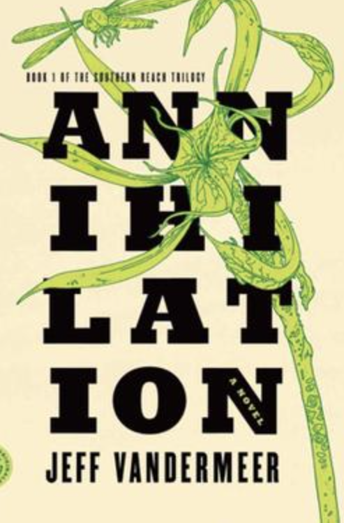

I · 2014
Annihilation
The rule is that wilderness can be surveyed, named, mapped, contained. Area X breaks this. The biologist walks in expecting to do science and walks out as something else, with the world she came from no longer the world she returns to.